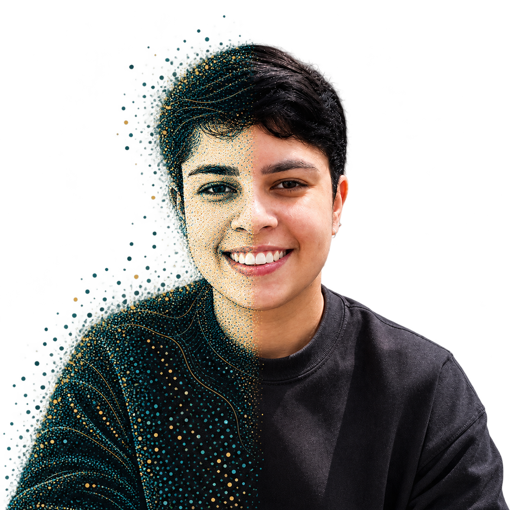
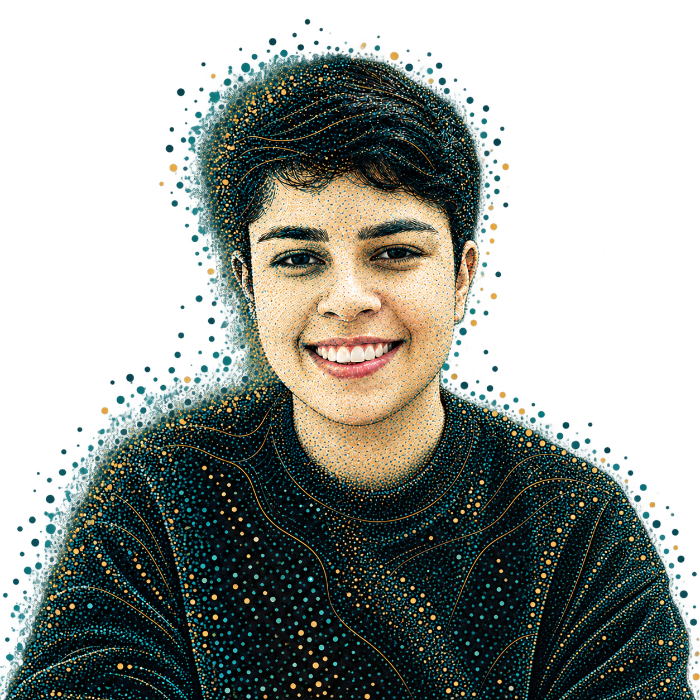
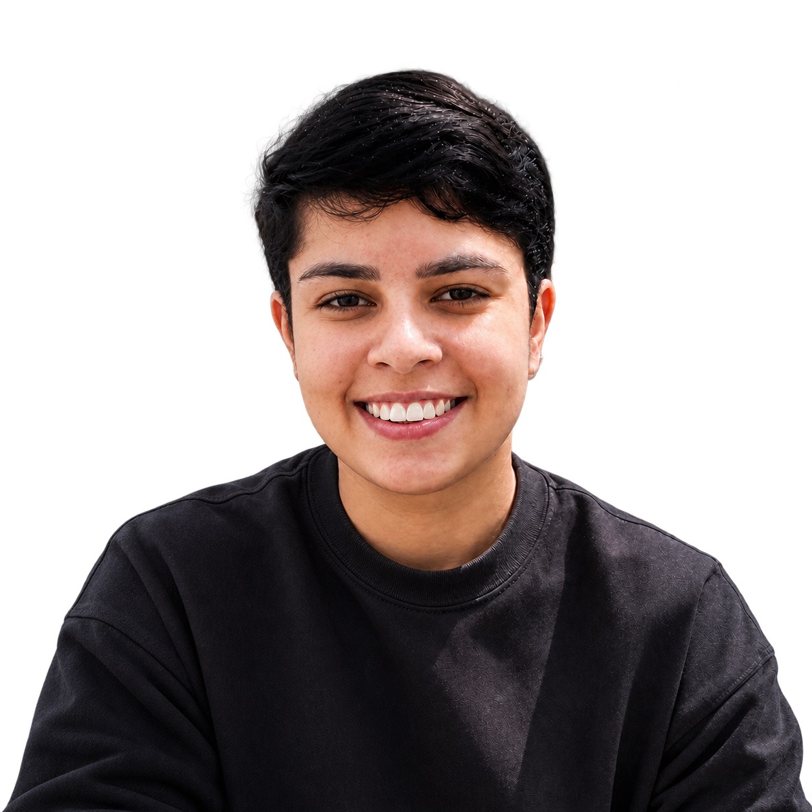

Flávia Rosa. Dados e desenvolvimento.
Análise & visualizaçãoInterfaces & aplicações
dados.
Exploro dados, encontro padrões e traduzo resultados em informação.
Conheça meus projetos ↗


<code>
Desenvolvo soluções que conectam código, dados e experiência visual.
Explore o desenvolvimento ↗Explore os dois lados
Flávia Rosa. Formada em Análise e Desenvolvimento de Sistemas.
Pós-graduanda em Data Science e Inteligência Artificial.
Uma seleção do meu trabalho

Brasília em Ar ↗
Clima, qualidade do ar e análise exploratória.

Dados acadêmicos ↗
Extração e padronização de arquivos Excel e PDF.

Apple Storefront ↗
Um desafio de interface com estética escura.